【JIN】見出しデザインをカスタマイズする（初心者向け）
2022.09.25
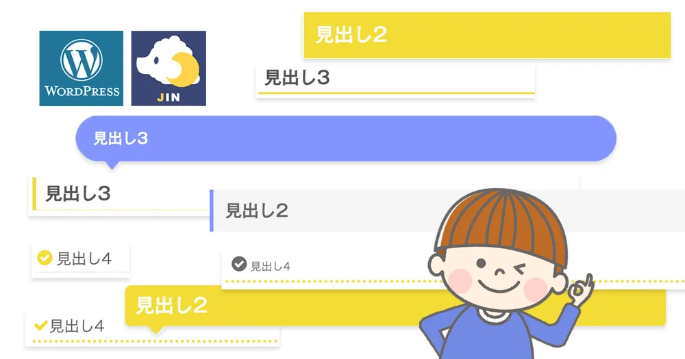
・WordPressの「JIN」テーマを使っている人
・なんとなくcssを知っているが詳しくは分からない人
・ブログの見出しを凝ってみたい人
少し手間を加えるだけでイメージやそれぞれの段落のもつ意味合いも強調出来て見やすくなっていませんか？
hl-customと見出しタグの前には半角スペースを開ける
↓WordPress内のHTMLタグ設定にペーストします。
見出しデザイン
WordPressの「JIN」テーマはカスタマイズし易く、ブログ初心者にはありがたいテーマなので人気ですね。 ミポノエもこちらを使用していますが、いろいろブログを見ていくうちに見出しデザインの大事さに気づいてきました。見出しデザインの重要性
- 全体のデザインに関わる
- 記事を読みたくなるかどうかは見出しにかかっている
- カラーユニバーサルデザインを意識しないと見づらい人が出てしまう
全体のデザインに関わる
ブログはほとんどが文字で構成されるので、パッと見ると見出しが一番に目の中に飛び込んできます。 見出しのデザインが階層によって目立つように工夫されていると、どれから読んでいけば良いのか、知らず知らずのうちに判断しています。 この記事はパッと見て見やすい記事なのか、読み手にわかり易くなるように工夫されているのかがすぐにわかってしまいます。読み手は同じ内容のブログがあったなら、やはり「見やすさ」「わかりやすさ」は一番大切なポイントなってきます。単調なデザインの見出し(例)
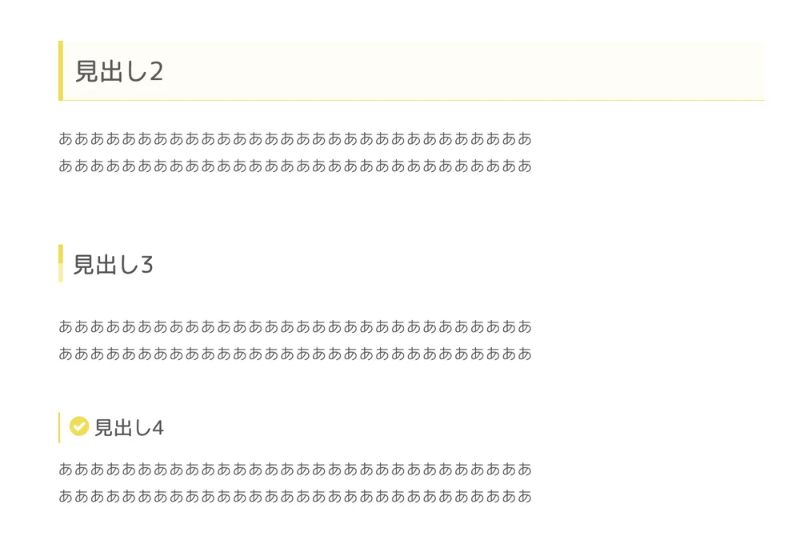
一見同じデザインで揃えていて統一があるように見えますが単調に見えてしまいます。工夫した見出し(例)
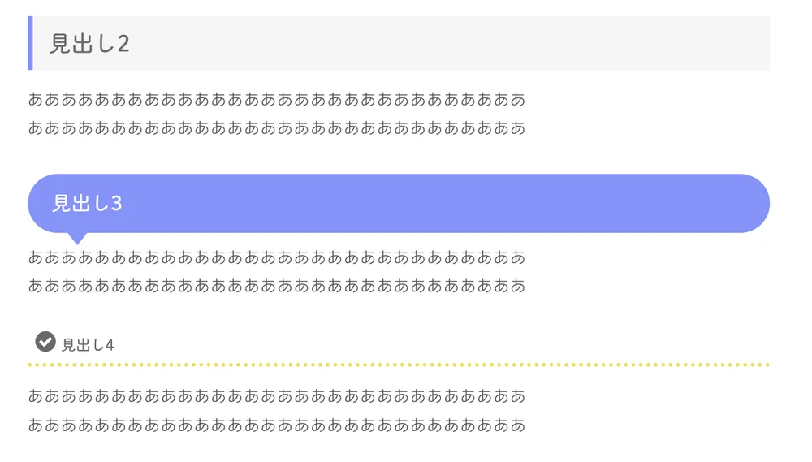
タイトルは文章と別のフォントをしようしていたり、タイトルの括りごとに目立つレベルを変えていたりしています。文字の前にアイコンをつけると目を引いたり、凝った印象があります◎。記事を読みたくなるかどうかは見出しにかかっている
読みたい見出し文章はもちろん、見やすいデザインも重要になってきます。 jinテーマではいろんな組み合わせが魅力の一つですが、160パターンもあるだけに迷いすぎてドツボにはまってしまい何時間も経っていた…！？なんてことはありませんか？ 他のブログを見比べて比較するにも一苦労でした。下記におすすめの組み合わせを作成しましたのでご参考にしてください。誰にでも問題なく見える色合いに
カラーユニバーサルデザインをご存じですか？色のコントラストや濃度や色合いなど誰にでも見やすくなるような配慮した色合いのことを指す言葉です。これを意識した配色にすることで見え方には個人差年齢差があるため誰にでも見やすい色合いの見出しになります。これを意識するとおしゃれにも見えるときもあるので一石二鳥ですね！
カラーユニバーサルデザインになっていない色の組み合わせ例
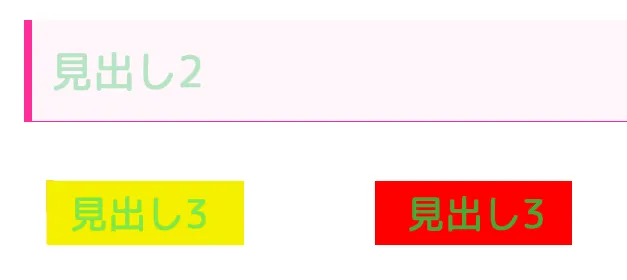
- 明るい緑と黄色が一緒に見えてしまう 緑と赤が似た色に見えてしまう
- 濃度が同じ色味だと目立ちにくくなる見づらくなる
jinテーマ見出しデザインのおすすめの組み合わせ
シンプル
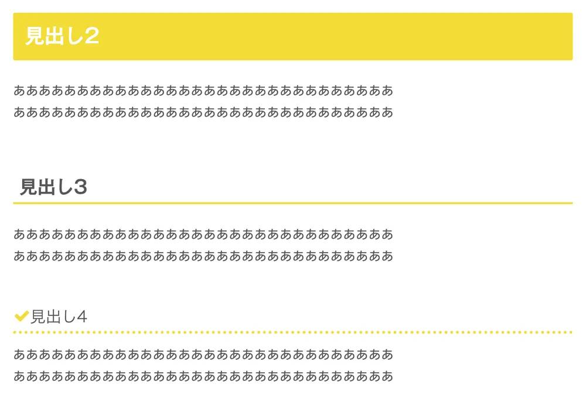
h2は文字の下にベタを敷くことで大見出しのイメージが出来て、h3はシンプルに線のみにして、h4は可愛くポイントを付けることで目立たせています。シンプルですが凝った感じもするタイトルの組み合わせです。吹き出し
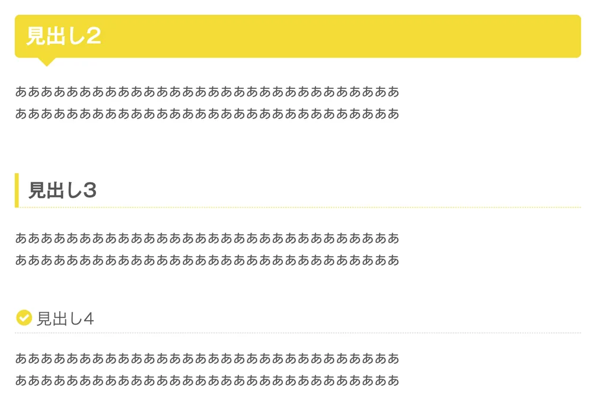
h2は吹き出しして目立つし可愛いです。h3は付箋風にしてh2に負けないような凝ったデザインにしていますのでh4はシンプルな点線にしてアイコンをつけることで埋もれないようにしています。凝ったデザインばかりにすると今度はごちゃごちゃしがちですがh4をシンプルにしたり、h3の付箋風の下のベタが薄くなっていることでそれぞれのタイトルの強さの段階がわかり易くなっています。JINオリジナル見出しを設定する
オリジナルデザインを使う時の注意点
JINの見出しデザイン解説はコチラです。オリジナルデザインは下の方に乗っていますがあらかじめデザインされたものはこちらのページに掲載されていました。ここには載っておらずNOMADCODEというサイトにコードを載せてくださっています。 ただ、どうやって使うのか詳しく書いてありませんでしたので使い方をご紹介します。設定方法
NOMADCODEからお好きなデザインをコピーする
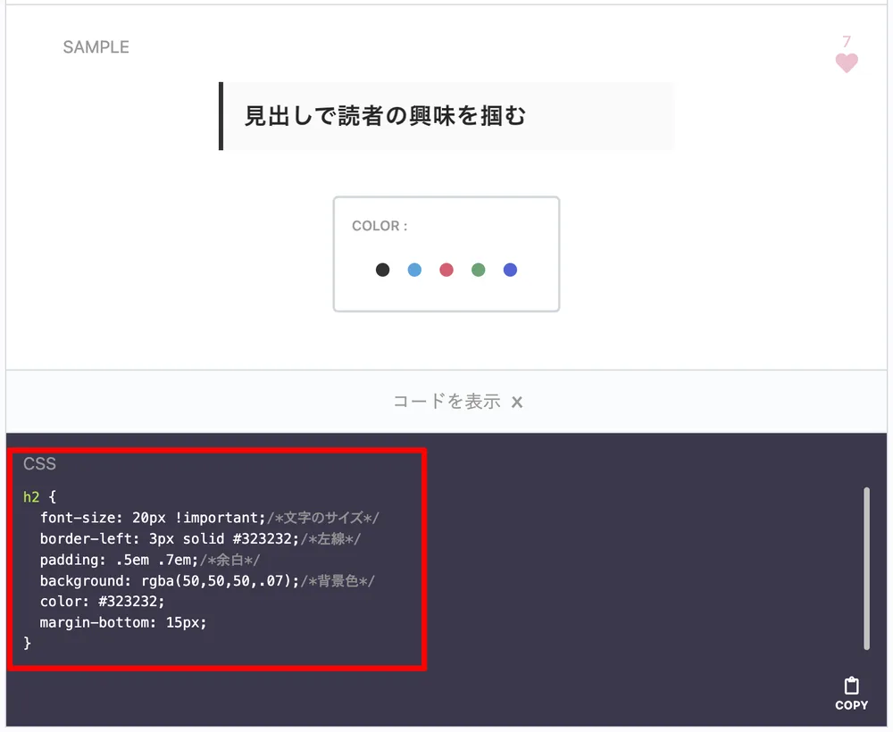
見出し設定の下側のBOXにペーストする
WordPressのJINテーマのカスタマイズの見出し設定のここにペーストします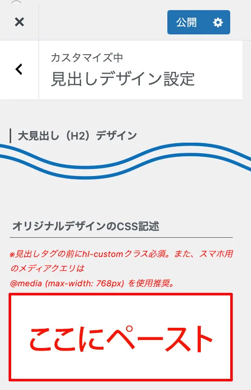
見出しタグの前に【hl-custom】を記入する
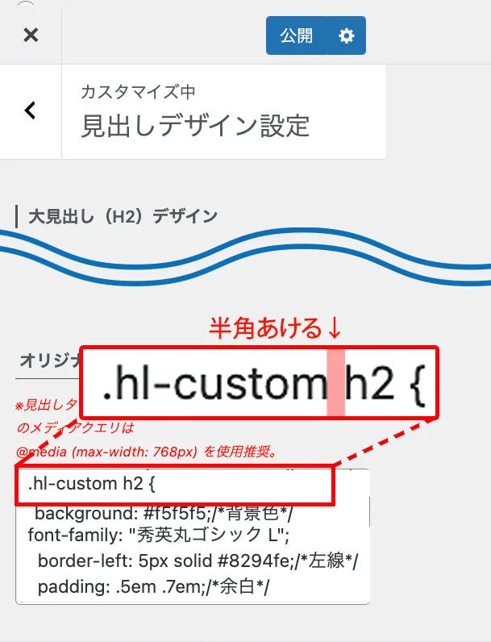
注意点
最初は書き方がわからなくてコピペしただけでした。すると右側の最近の記事の文章にまで修飾がついてしまってめっちゃ焦りました💦失敗例
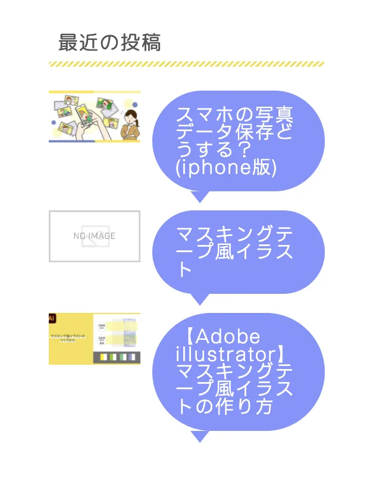
💬 うぁ！なんで？
いろいろ調べても出てこないので、もう一度見出しの下側のBOXの上に赤文字で４ptくらいの注意事項が…！しかも初心者なのでパッと見るだけでは意味がわかりませんでした。
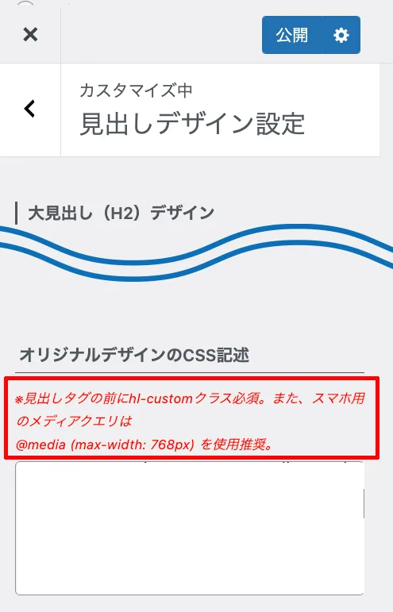
解読すると、
クラス必須って書いてあるのは、見出しのCSSは「.hl-custom」として記述してあるので、このBOXに書く時は見出しタグ(h2〜h4)の前に「.hl-custom」を記述してね。書き方はあらかじめ記述してあるから参考にして記述してね。
ということなんです。記入してパッと変わった時はとても嬉しかったです。💬 タイトル用の見出しのクラス設定があったんだね。
Webフォントの設定方法
ConoHa WINGを使っていますので、その設定方法になっています。
ConoHa WINGのTypeSquareページに詳しく掲載してありますので、これを見ながら進めてください。
HEADタグの中に次の文を挿入
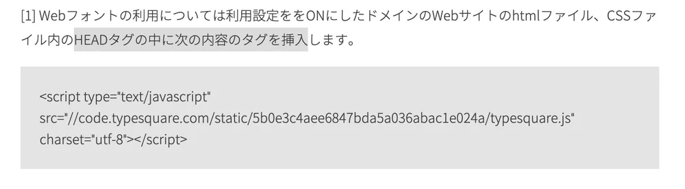
↑この文章を↓WordPress内のHTMLタグ設定にペーストします。
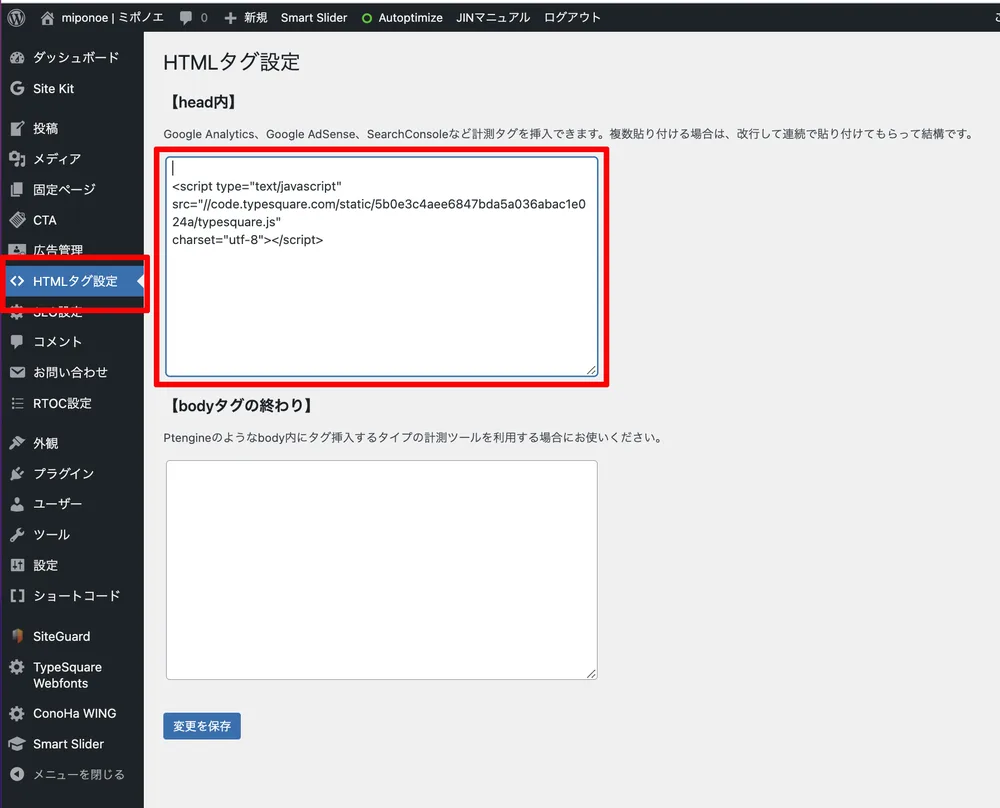
CSSを見出しタグに追加する
font-family: "秀英丸ゴシック L";
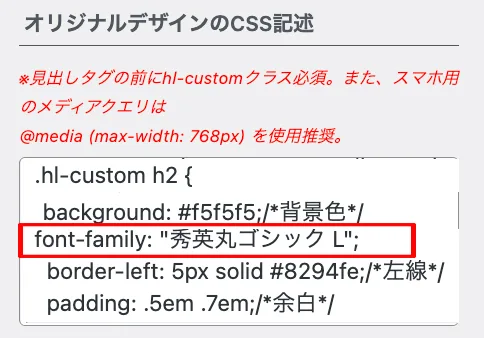